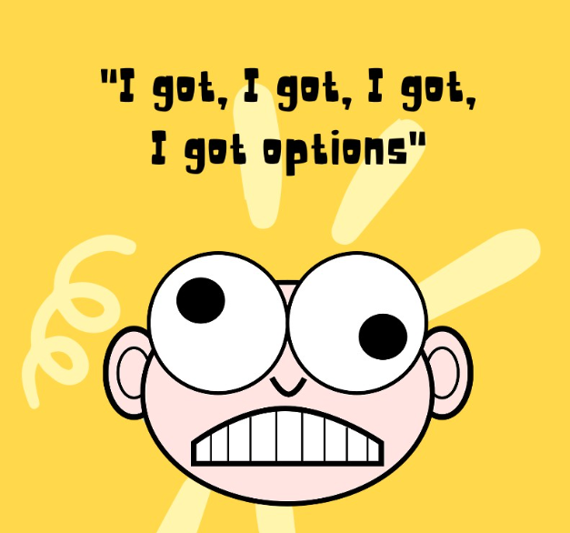
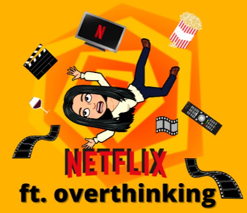

4 years building AI products and platforms from 0→1. I've taken ideas from a napkin to live products with real revenue — across B2B SaaS, D2C, and HealthTech.
Loved by teams at
From problem discovery to live products with real business impact.
← Scroll to see all projects
Monthly GMV processed across 210+ stores
Annual cost savings delivered at The Sleep Company
Field operations managed on platform I built from scratch
Live AI products shipped end-to-end
Hospital CXOs interviewed across India & UAE
Where I am most useful.
When there's an idea but no product, I run discovery, define the MVP, write the PRD, work with engineering, and own the launch.
When you need LLMs to actually do something useful — forecasting, automation, GenAI experiences — I know how to build it and measure if it works.
When your team runs on hacks and spreadsheets, I design the system underneath — routing logic, internal tools, data pipelines, workflows.
When you need a mobile app or website that converts, I bring user research, A/B testing, and UX instinct to every decision.
When your customer is a CXO and your sales cycle is 3 months, I know how to build the product, the pricing, and the GTM story.
When you need metrics that mean something — not vanity dashboards — I build the telemetry, run the experiments, and interpret what's real.
Writing on LinkedIn about product, intuition, and building things.

Read on LinkedIn →
Read on LinkedIn →

Read on LinkedIn →
2022 · Fellowship Work · Click to view decks
Hi, I'm Sharanya.
I started as an Electronics & Communication engineer, got obsessed with why people use products, and never went back to hardware.
I spent 3 years as Chairperson of my college debating society — mentoring 300+ students and organising international debates across 5 countries. That's where I learned to argue a position with evidence, listen to the other side, and communicate with precision. Turns out, that's also how good product decisions get made.
I'm a GrowthX fellow and Nextleap PM fellow. Being in those rooms — with the sharpest product minds around — fundamentally changed how I think about growth, strategy, and what it really means to build something people care about.
I cook, I film it, I put it on Instagram. NDTV wrote about one of my reels — which I'm choosing to count as a milestone.
Debating in college gave me a stage. I've been looking for reasons to get back on one ever since.
I believe the best PMs are built through obsessive learning — in communities, in conversations, and by getting things wrong in public.
I'm open to Product Roles and consulting gigs — particularly in AI products, B2B SaaS, and consumer. Based in Mumbai, open to relocation.